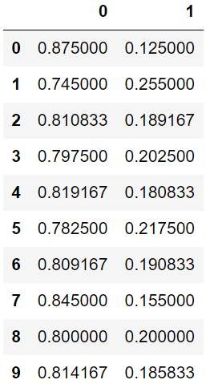

1.Utils
유틸리티와 함수 정의
2.Models
2.1 encoder : Inception-ResNet V2 + base : Unet
2.2 encoder : timm-efficientnet-b3 + base : Unet
이미지의 크기, 해상도, 복잡도, 레이블의 정밀함, 사용가능한 모델링 데이터량을 고려하기위해서 encoder를 inception-resnet v2 를 이용했습니다. encoder를 inception-resnet v2 으로 선택하면 데이터를 inception-resnet을 이용해 특성을 뽑아내게 됩니다. 이미지의 고해상도 예측을 가능하게 한건 Unet의 역할이 크고 의료용 이미지, segmentation에 사용되는 모델입니다. 단면도 슬라이스 데이터에 강점을 보이기 때문에 base 모델을 Unet으로 결정했습니다. 그렇게 되면 모델의 알고리즘은 encoder를 inception-resnet v2로 설정했기에 이 모델로 이미지의 특성을 뽑아내고 이 값을 base로 설정된 Unet에 넘겨주고 최종 학습은 Unet으로 진행합니다. Unet을 선택한 이유는 일단 세포 이미지 데이터가 단면도 슬라이스 데이터이며 segmentation이 된 데이터와 함께 학습하기 때문입니다.

3.Custom_Dataset
pytorch의 Dataset 클래스를 상속받아 사용자의 입맞대로 데이터셋을 정의할 수 있습니다.
여기선 데이터셋 전처리, 이미지 로딩, 데이터 샘플링 등을 정의할 수 있습니다.
__init__ 을 통해 함수에서 데이터셋의 경로, 이미지 크기, 전처리 방법 등을 설정해줍니다.
___len__ 을 통해 __init__에서 설정해 준 값을 받아 데이터 셋의 최종 크기를 반환받습니다.
__getitem__ 을 통해 최종 각 샘플에 대한 이미지와 레이블 등을 반환받습니다.
4. Image_Split
이미지 데이터에서 제공된 세포이미지 + 세포에 대한 mask 데이터가 각 58장 존재합니다.
이미지 데이터가 한 프레임에 한개의 세포만 존재하는 것이 아니라 여러개의 데이터가 존재합니다.
하지만 mask 이미지는 여러개의 세포 중 한개에 대한 mask 만 제공하기때문에 mask를 기준으로 이미지를 자릅니다.
크기에 맞게 자른 세포 이미지는 train_cropped 폴더와 test_cropped 폴더에 저장됩니다.
기존 존재했던 58장의 mask 이미지를 train_cropped 폴더 내 이미지의 크기에 맞게 다시 잘라줍니다.
잘라준 mask이미지를 mask_cropped 폴더에 저장합니다.
이렇게 되면 train_cropped 폴더 내 이미지의 크기와 mask_cropped 폴더 내 이미지의 크기가 동일하게 되어 사용할 수 있게 됩니다.
5. segmentation_train
기존 58장의 mask 데이터만 이용해서 최종 예측하려고 하니 정확도가 60% 정도밖에 나오지 않아 도입했습니다.
4번을 통해 cropped 한 두개의 이미지. train_cropped 폴더내 이미지와 mask_croped 폴더내 이미지 58장을 이용해 학습시킵니다.
학습 시키는 이유는 mask + 세포이미지 데이터는 58장밖에 없으며 test_mask 데이터가 없기때문에, 최종 전이를 예측하기 위해 mask 데이터를 이용하려고 합니다.
_기존 존재한 데이터를 학습 시키고 새롭게 train과 test에 대해 mask 데이터를 생성하기 위함입니다. train : 1000장 생성 test : 250장 생성
6.annotation_mask_inference
5번을 통해 학습시킨 후 저장된 segmentaion_generate_model.pth를 이용해 데이터를 생성해줍니다.
생성된 mask 데이터는 train_generated_mask, test_generated_mask 폴더에 저장됩니다.
CGAN과 비슷한 개념입니다.
7.image_feature_extraction
train_imgs + train_generated_mask 데이터 각 1000장 test_imgs + test_generated_mask 데이터 각 250장 을 이용합니다.
데이터의 feature 추출 후 (이미지의 특이점을 파악하기 위함) 이미지 데이터의 feature 추출 후 저장, 특정 픽셀값과 6번을 통해 나온 mask를 합치는 작업입니다.
각 이미지가 전이되었는지 유무를 넣어주기 위해 label 과 연결해야합니다

8.image_classification
코드+설명..
